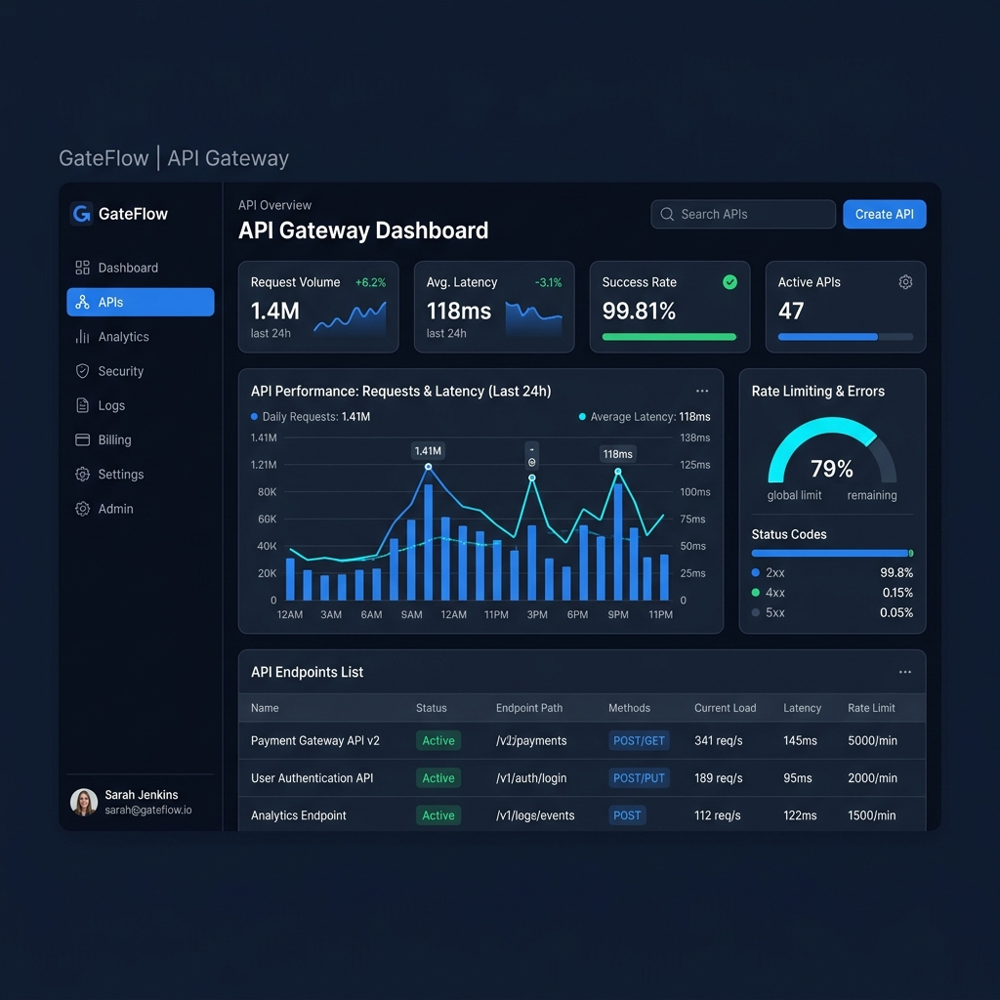

● Systems Operational
GateFlow
Cloud API Gateway
Engineered a cloud-native API Gateway featuring secure request routing and Redis-powered rate limiting to protect backend endpoints. Architected a React monitoring dashboard with real-time health checks, analytics pipelines, and interactive testing environments containerized via Docker Compose.
React
FastAPI
Redis
Docker
JWT
HTTPX
Tailwind CSS